lately it feels like there has been constant negativity. all we hear about is issues regarding climate change, war, politics, the job market, AI in every corner...it is hard to stay hopeful sometimes.
have you ever felt anxious about the future?
don't worry, you and LOTS of people feel the same
insert stats
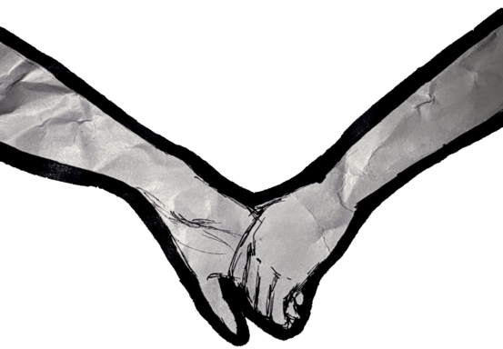
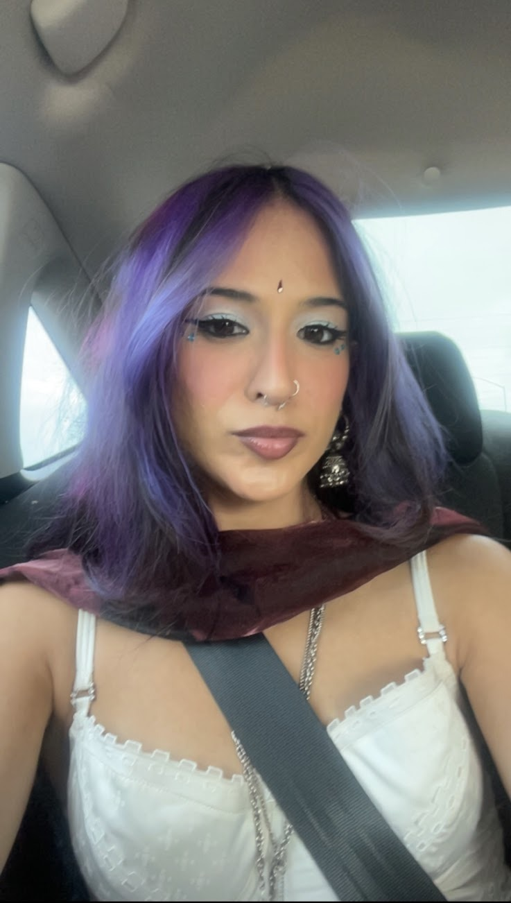
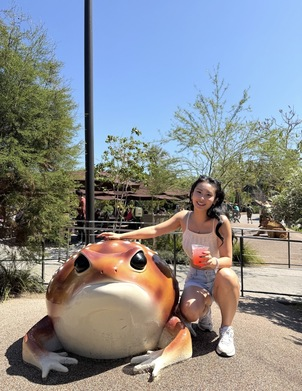
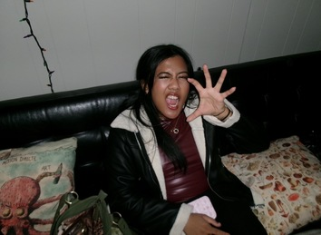
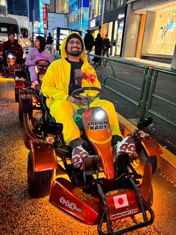
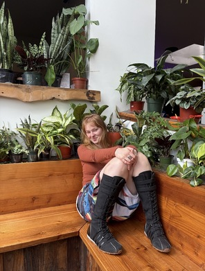
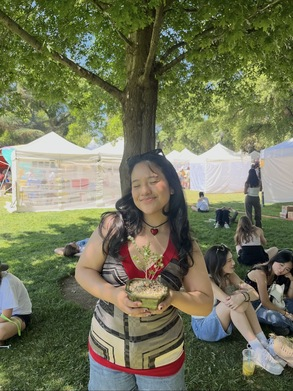
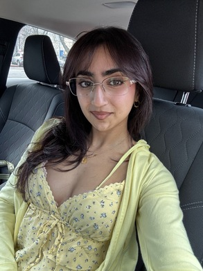
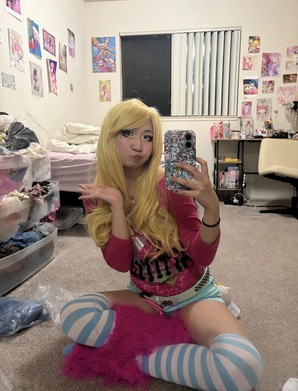
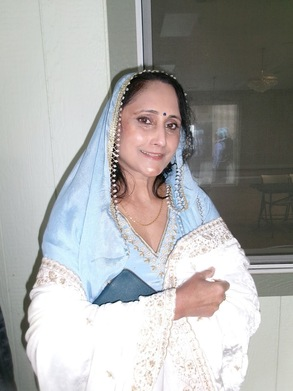
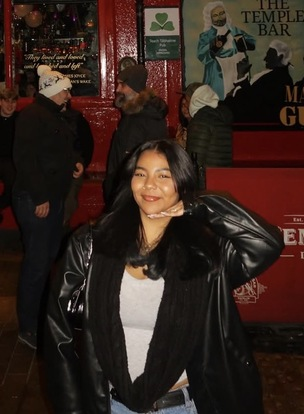
even though times are uncertain and we can't predict the future, there is one thing that's for sure: we have each other!
who is someone you look up to the most?